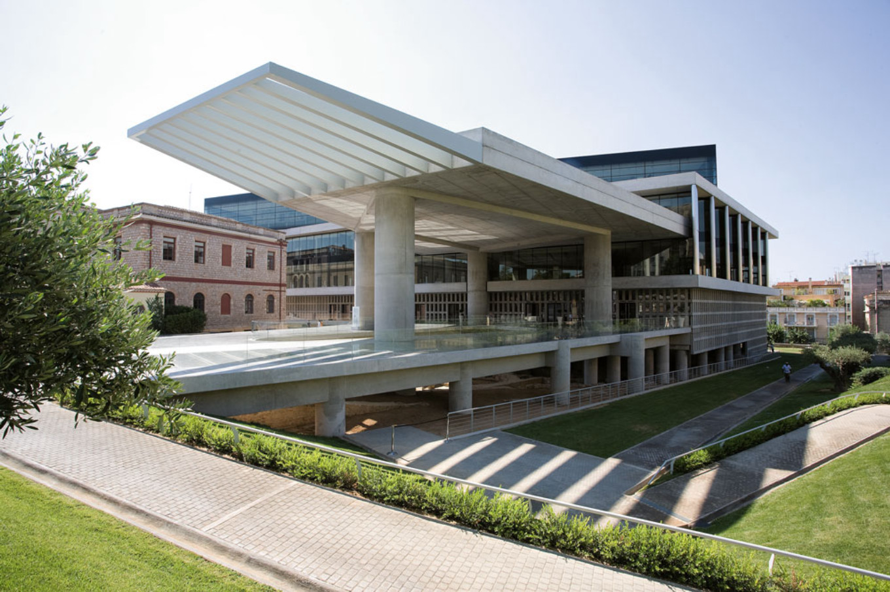

Επικοινωνία

Στοιχεία επικοινωνίας
Μουσείο: Μουσείο Ακρόπολης
Διεύθυνση: Διονυσίου Αρεοπαγίτου 15, Αθήνα
Τηλέφωνο: +30 210 900 0900
Email: info@example.gr
Τοποθεσία
Ακολουθήστε μας στα social media
Μπορείτε να επισκεφθείτε τα επίσημα social media του Μουσείου Ακρόπολης.
Επίσημα Social Media